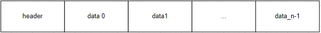
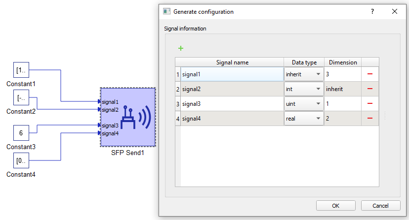
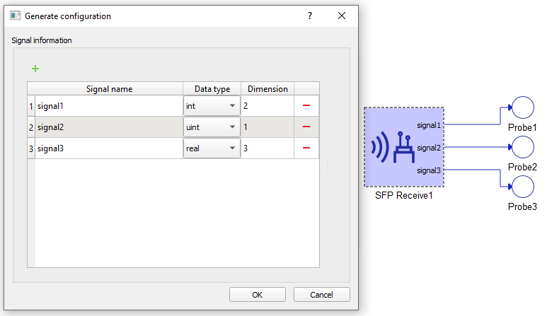

SFP Simulation Link
Description of the SFP Simulation Link protocol and its implementation in the Typhoon HIL Toolchain.
- Vendor agnostic
- Point-to-point link - with routable frames
- Easy to implement and use:
- Compliant with the majority of the existing real-time simulation platforms
- Light on FPGA resources
- Freely available reference designs / IP cores
- High bandwidth - more than 1 million messages per second in typical applications
- Low latency - lower than 1us
- Reliable - built-in synchronization and safety features
- Signal processing mode - payload is periodically configured by a CPU, after which the frame is sent
- High speed mode - values of the variables to be sent are read directly from the FPGA solver. Conversely, received variables are injected into the FPGA solver. This occurs every simulation step.
Physical Layer
- Duplex dataflow
- Framed data
- 8b/10b encoding
- 5 Gbps line rate (0.5, 1, 2, 2.5 and 4 Gbps also supported via custom firmware configuration)
- No Cyclic Redundancy Check (CRC) for data (Can be enabled via custom firmware configuration)
Application Layer
The application layer enables variable exchange by means of multi-variable messages.
SFP Simulation Link can be implemented on most Xilinx FPGA and SoC devices with gigabit transceivers. Protocol endpoint reference design for Xilinx VC707 development board is available here.
Message format
The following section describes the message format used by SFP Simulation Link version 0.1. Message format might change in the upcoming versions.
- Header (optional)
- Payload data

Frame Header
Header content is defined below. It will likely be extended in the upcoming protocol versions. It can be disabled.
| Field name | Width (bits) | Description |
|---|---|---|
| Reserved | 2 | Reserved for future use |
| Src ID | 2 | Source device ID |
| Reserved | 2 | Reserved for future use |
| Dest ID | 2 | Destination device ID |
| Payload size | 8 | Payload size in words |
| Protocol version | 8 | Encoded protocol version. In case of version mismatch between the sender and the receiver the message should be discarded. |
| Reserved | 8 | Reserved for future use |
Frame Payload
In signal processing mode, the maximum payload size is 250 words (4 bytes each) and each word can be assigned its own data type, be it signed/unsigned 32-bit integer or IEEE754 floating point. In high speed mode, sending and receiving are limited to 32 and 16 words of IEEE754 floating point respectively.
Typhoon HIL Implementation
Currently, SFP Simulation Link is supported by the following Typhoon HIL devices: HIL101, HIL404, HIL506 and HIL606.
The upper SFP connector on a HIL101 and HIL404 is used when SFP link components are present in the model. When no SFP Link components are present in the model, the upper SFP connector is used for device paralleling or for Egston SFP Link. If Aurora line rate or CRC parameters differ from default values, the upper port is used only for SFP Simulation Link and cannot be used for device paralleling.
HIL506 and HIL606 have two SFP ports dedicated exclusively for SFP Simulation Link or Egston SFP Link. In HIL506 and HIL606 firmware configurations with only one SFP Simulation Link channel present, the channel will be tied to the lower SFP port on the device.
SFP Setup

The SFP Setup component is used to configure the SFP Simulation Link parameters and provide the link status. The SFP link device ID can be defined either by the position of the rotary switch or explicitly by the component property. The output port of the SFP Setup component provides the SFP Link physical status where one (1) means that the link is up. Header readout can be done via two additional output ports which appear when the "Header output" property is checked. The first one outputs the value of the last received frame header. The second one outputs the validity of the header, where one (1) means that the received header is valid and the frame is received and data is extracted from the frame, and zero (0) indicates that the frame is received but then rerouted or discarded.
The SFP Setup component supports two modes of operation:
- Master mode
- Data is sent on every simulation cycle.
- Slave mode
- Data is sent only as a response to a valid received frame. Slave mode is only available when not using high speed mode and the header is disabled.
SFP Bus Setup component properties
- General (Tab)
- Execution rate
- Signal processing execution rate. Execution rate must match with the other components used in the model.
- Override HIL device ID
- Allows to override the device ID used by the SFP Send and Receive component. When unchecked, the HIL Device ID is defined by the rotary switch on the HIL Device backplate.
- Execution rate
- SSLx (Tab)
- Disable header
- Disables the frame header. Frames will be sent without a header, and received frames will be regarded as if they contain no header.
- Header output
- Enables readout of the last received frame header.
- Enable synchronization
- Enables the User Flow Control (UFC).
- Mode
- Selects Master/Slave mode
- Disable header
Ports
- Output ports
- Link up
- Signals link up status.
- Header
- Present when header is enabled. Outputs the header value.
- Header valid
- Present when header is enabled. Outputs '1' when received header value matches the expected header format and Dest ID field mathes the device ID.
- Timeout flag
- Only supported in Signal processing mode. Present when header is disabled and selected mode is 'Slave'. Signals if data hasn't been received in previous simulation cycle.
- Link up
In models that use multiple devices, one SFP Setup component should exist for each device that uses the SFP link.
SFP Send

The SFP Send component enables sending data through the SFP link. In signal processing mode, payload size is calculated as the sum of dimensions of all input signals in the variable configuration, whereas in high speed mode it is determined by the "Number of signals to send" property value.
SFP Send component properties
- General (Tab)
- SFP Port
- Selects the SFP port through which the communication is established.
- Destination device ID
- Endpoint Device ID.
- High speed SFP send
- Checkbox which enables fast signal sending.
- Execution rate
- Signal processing execution rate. Execution rate must match with the other components in the model.
- SFP Port
- Data (Signal processing) (Tab)
- Variable configuration
- Defines the payload of the Send component SFP frame. For more information on how to configure the payload check the SFP Send variable configuration section.
- Variable configuration
- Data (High speed) (Tab)
- Number of signals to send
- Defines number of signals that will be sent through SFP link in high speed mode.
- Signal selection properties
- Selects current or voltage measurement signals which will be sent in high speed mode. They can be selected directly from the Schematic Editor, without the need to connect a signal processing input.
- Number of signals to send
- Input ports- defined by variable configuration
- Output ports
- dev_id_connection - present when high speed send is enabled, used only to tie the component to a device marker when needed
SFP Send variable configuration
To change the variable configuration, use the Generate configuration button in the Data tab.

In the configuration menu, you can customize the payload to be sent via SFP.
Table 2 contains an overview of the variable configuration menu.
| Field name | Description |
|---|---|
| Signal name | Unique for each signal. |
| Data type | Allowed data types are inherit (depends on the type of input signal), integer, unsigned integer or real. |
| Dimension | Number of variables of the same data type to be sent. This value dictates the dimension of the input terminal. |
SFP Receive

The SFP Receive component enables receiving data over the SFP link. In signal processing mode, the payload size is determined by the variable configuration, whereas in high speed mode it is determined by the "Number of received variables" property value.
SFP Receive component properties
- SFP Port
- Selects the SFP port through which the communication is established.
- Source device ID
- Endpoint Device ID.
- High speed SFP receive
- Checkbox which enables fast signal sending.
- Execution rate
- Signal processing execution rate. Execution rate must match with the other components in the model.
- Variable configuration
- Defines the payload of the Receive component. For more information on how to configure the payload, check the SFP Receive variable configuration section.
- Number of received variables
- Specifies receive variable number.
- Power electronics ports
- port1 - present when the high speed receive is enabled, used only to tie the component to a device marker when needed
- Signal processing output ports- defined by variable configuration
SFP Receive variable configuration
To change variable configuration, use the Generate configuration button.

In the configuration menu, you can customize the frame payload to be received via SFP.
Table 2 contains an overview of the variable configuration menu.
| Field name | Description |
|---|---|
| Signal name | Unique for each signal. |
| Data type | Allowed data types are integer, unsigned integer or real. |
| Dimension | Number of variables of the same data type to be received. This value dictates the dimension of the output terminal. |
Virtual HIL support
Virtual HIL currently does not support this protocol. When using a non-real-time environment (e.g. when running the model on a local computer), inputs to this component will be discarded and outputs from this component will be zeroed.